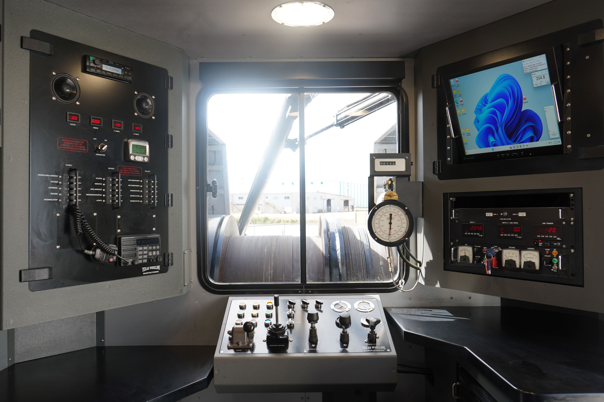

End-to-end well services you can rely on.
Decades of combined oilfield experience.
Zero-compromise safety standards on every job.
Serving clients across international basins.
Kashmir Blue Energy delivers advanced cased hole logging solutions that monitor wellbore conditions, capture critical downhole data, and support safe, efficient operations. Backed by proven technology and experienced personnel, we provide reliable real-time well integrity evaluations and production insights to help optimize performance and maintain well integrity.
Kashmir Blue Energy provides comprehensive cased hole logging services supported by innovative technology, experienced personnel, and reliable field support. Our team analyzes and interprets data in real time using customized logging programs designed to reduce non-productive time and maximize data accuracy. We adapt quickly to changing wellsite conditions and deliver detailed reporting, technical support, data correction, and re-logging services to ensure accurate, actionable results throughout every operation.
Capabilities
Kashmir Blue Energy provides reliable wireline perforating services designed to maximize reservoir access and improve well productivity. Using advanced perforating systems and proven operational practices, our team delivers precise perforation placement to optimize flow efficiency and support successful completion operations.
Our experienced personnel work closely with customers to develop customized perforating programs tailored to specific well conditions and production objectives. From conventional to complex well environments, we maintain a strong focus on safety, accuracy, and operational efficiency throughout every stage of the job.
With responsive field support, dependable equipment, and real-time operational oversight, Kashmir Blue Energy ensures perforating operations are executed efficiently while minimizing downtime and maintaining the highest standards of wellsite performance and reliability.
Capabilities
Kashmir Blue Energy provides dependable wireline mechanical services that support well completion, intervention, and abandonment operations through precise mechanical control within the wellbore. Our experienced team utilizes advanced wireline tools and proven operational techniques to perform critical downhole mechanical applications safely and efficiently.
From setting and retrieving plugs to shifting sleeves and conducting remedial operations, we deliver accurate execution designed to improve operational performance, reduce downtime, and maintain well integrity. Backed by responsive field support and a commitment to safety and reliability, Kashmir Blue Energy delivers mechanical wireline solutions tailored to the specific requirements of each well and operation.
Capabilities
Kashmir Blue Energy provides efficient pipe recovery services designed to safely restore well access and return operations to drilling as quickly as possible. Utilizing proven recovery techniques and specialized wireline equipment, our experienced team works to retrieve stuck or damaged downhole drill pipe while minimizing nonproductive time (NPT) and reducing the need for costly remedial drilling or sidetracking operations.
We deliver reliable solutions tailored to the specific challenges of each well, helping operators improve operational efficiency, reduce overall intervention costs, and maintain wellbore integrity throughout the recovery process.
Capabilities
Kashmir Blue Energy provides safe and reliable Plug and Abandonment (P&A) services to permanently secure wells at the end of their life. Our experienced team uses specialized tools and proven methods to isolate productive zones, set plugs, and complete abandonment operations efficiently while meeting industry and regulatory standards.
We are committed to safety, environmental responsibility, and maintaining well integrity throughout the entire process.
Capabilities
Kashmir Blue Energy provides reliable slickline services to support well maintenance, intervention, and inspection operations. Using solid or braided wire, our experienced team safely lowers and retrieves tools inside the well to carry out important tasks such as setting and removing plugs, checking well conditions, and supporting routine maintenance activities.
Our slickline services are designed to improve efficiency, reduce downtime, and help maintain safe and reliable well operations. With dependable equipment, skilled personnel, and a strong focus on safety and service quality, Kashmir Blue Energy delivers practical solutions tailored to the needs of each well and operation.
Capabilities
Get in touch with our team to discuss your specific well service requirements.
Contact Us